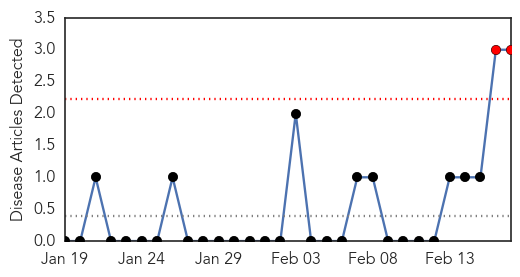
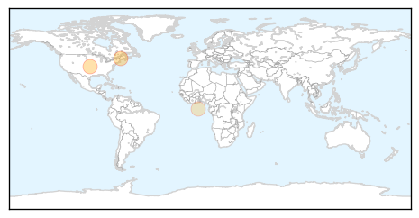
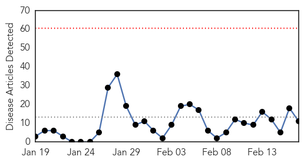
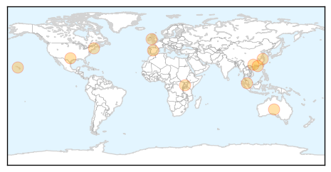
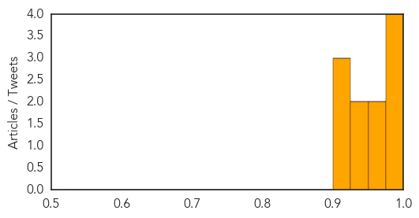

Chikungunya
30-Day Web Trend
2 alerts, 0 warnings

30-Day Twitter Trend
0 alerts, 0 warnings

Article Locations
Article Confidences

Top Articles:
Top Tweets:
-
No tweets found for Feb 17, 2014
Influenza
30-Day Web Trend
0 alerts, 0 warnings

30-Day Twitter Trend
3 alerts, 0 warnings

Article Locations
Article Confidences
Top Articles:
- 0.998
- University of Arizona Flu Evolution Study Findings May Alter History And Textbooks BioNews Texas
- 0.993
- Human infection with avian influenza A(H7N9) virus – update
- 0.985
- Developments and Trends in Influenza Therapeutics (Technical Insights) -- LONDON, Feb. 17, 2014 /PRNewswire/ --
- 0.980
- Human H7N9 Infection Reported In Malaysia
- 0.972
- Research Shows New Flu Viruses Often Arise In Domestic Animals
- 0.972
- Research Shows New Flu Viruses Often Arise In Domestic Animals
- 0.935
- Will China’s H7N9 Epidemic Be Comparable to SARS?
- 0.934
- Eight more H7N9 cases reported in China
- 0.923
- Study of Flu Evolution Challenges Conventional Wisdom
- 0.906
- Flu could 'spread like wildfire', leading expert warns
- 0.901
- Threat of global disease outbreaks spawns 27-nation pact
Top Tweets:
-
No tweets found for Feb 17, 2014